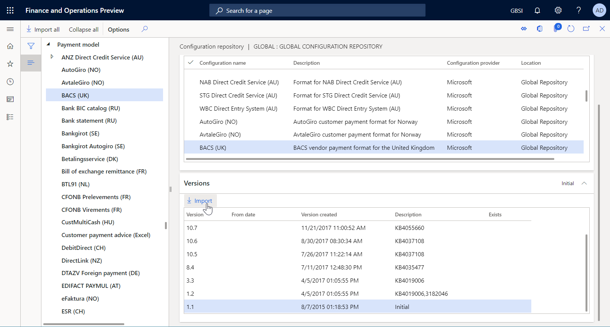
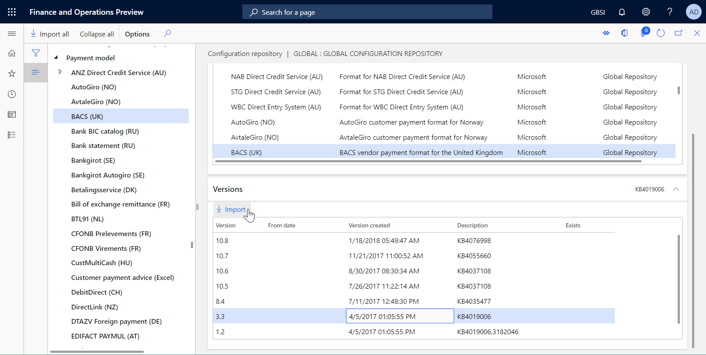
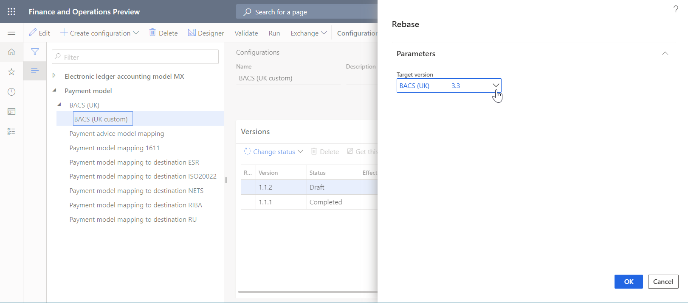
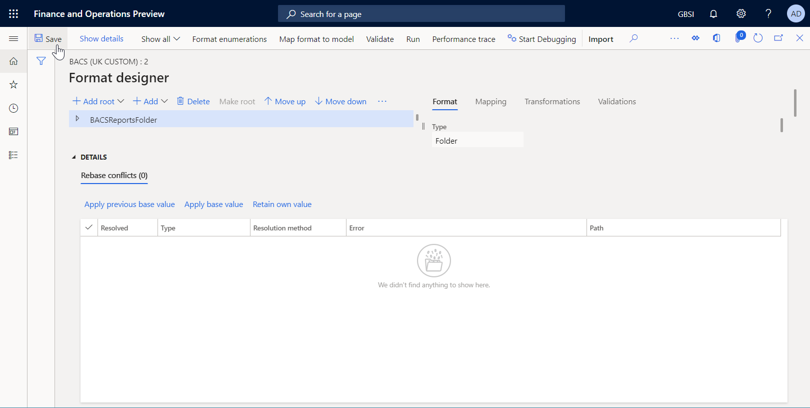

Anpassen eines EB-Formats, um ein benutzerdefiniertes elektronisches Dokument zu generieren
[!include[banner](../includes/banner.md)]Die Prozeduren in diesem Thema erläutern, wie ein Benutzer mit der Rolle des Systemadministrators oder des funktionalen Beraters für die elektronische Berichterstellung die folgenden Aufgaben ausführen kann:
- Konfigurieren der Parameter für das Framework für elektronische Berichterstellung (EB).
- Importieren von EB-Konfigurationen, die von Microsoft bereitgestellt und zum Generieren einer Zahlungsdatei verwendet werden, während eine Kreditorenzahlung verarbeitet wird.
- Erstellen einer benutzerdefinierten Version einer standardmäßigen EB-Formatkonfiguration, die von Microsoft bereitgestellt wird.
- Ändern der benutzerdefinierten EB-Formatkonfiguration, sodass Zahlungsdateien generiert werden, die den Anforderungen einer bestimmten Bank entsprechen.
- Übernehmen von Änderungen, die an der standardmäßigen EB-Formatkonfiguration vorgenommen wurden, in die benutzerdefinierte EB-Formatkonfiguration.
Alle der folgenden Prozeduren können im GBSI-Unternehmen ausgeführt werden. Eine Codierung ist nicht erforderlich.
Verarbeiten einer Kreditorenzahlung durch Verwendung des standardmäpigen EB-Formats
Verarbeiten einer Kreditorenzahlung durch Verwendung des benutzerdefinierten EB-Formats
Importieren neuer Versionen der standardmäßigen EB-Formatkonfigurationen
Konfigurieren des EB-Frameworks
Als Benutzer mit der Rolle des funktionalen Beraters für die elektronische Berichterstellung müssen Sie den minimalen Satz von EB-Parametern konfigurieren, bevor Sie das EB-Framework zum Entwerfen einer benutzerdefinierten Version eines standardmäßigen EB-Formats verwenden können.
Parameter der elektronischen Berichterstellung konfigurieren
Wechseln Sie zu Organisationsverwaltung > Arbeitsbereiche > Elektronische Berichterstellung.
Wählen Sie auf der Seite Lokalisierungskonfigurationen im Bereich Zugehörige Links die Option Parameter für elektronische Berichterstellung aus.
Auf der Seite Parameter für elektronische Berichterstellung legen Sie auf der Registerkarte Allgemein die Option Entwurfsmodus aktivieren auf Ja fest.
Legen Sie auf der Registerkarte Anhänge die folgenden Parameter fest:
- Wählen Sie im Feld Konfigurationen den Dateityp für das USMF-Unternehmen aus.
- Wählen Sie in den Feldern Einzelvorgangsarchiv, Temporär, Grundlage und Andere den Dateityp aus.
Weitere Informationen zu EB-Parametern finden Sie unter Konfigurieren des EB-Frameworks (This is an external link).
Aktivieren eines EB-Konfigurationsanbieters
Jede hinzugefügte EB-Konfiguration wird als Eigentum eines EB-Konfigurationsanbieters markiert. Der EB-Konfigurationsanbieter, der im Arbeitsbereich Elektronische Berichterstellung aktiviert ist, wird zu diesem Zweck verwendet. Daher müssen Sie im Arbeitsbereich Elektronische Berichterstellung einen EB-Konfigurationsanbieter aktivieren, bevor Sie mit dem Hinzufügen oder Bearbeiten von EB-Konfigurationen beginnen.
Note
Nur der Besitzer einer EB-Konfiguration kann diese bearbeiten. Daher muss im Arbeitsbereich Elektronische Berichterstellung der entsprechende EB-Konfigurationsanbieter aktiviert werden, bevor eine EB-Konfigurationen bearbeitet werden kann.
Überprüfen der Liste der EB-Konfigurationsanbieter
- Wechseln Sie zu Organisationsverwaltung > Arbeitsbereiche > Elektronische Berichterstellung.
- Wählen Sie auf der Seite Lokalisierungskonfigurationen im Bereich Zugehörige Links die Option Konfigurationsanbieter aus.
- Auf der Seite Konfigurationsanbietertabelle hat jeder Anbieterdatensatz einen eindeutigen Namen und eine eindeutige URL. Überprüfen Sie den Inhalt dieser Seite. Wenn bereits ein Datensatz für Litware, Inc. (
https://www.litware.com) vorhanden ist, überspringen Sie die nächste Prozedur Hinzufügen eines neuen EB-Konfigurationsanbieters.
Hinzufügen eines neuen EB-Konfigurationsanbieters
- Wechseln Sie zu Organisationsverwaltung > Arbeitsbereiche > Elektronische Berichterstellung.
- Wählen Sie auf der Seite Lokalisierungskonfigurationen im Bereich Zugehörige Links die Option Konfigurationsanbieter aus.
- Wählen Sie auf der Seite Konfigurationsanbieter die Option Neu aus.
- Geben Sie im Feld Name Litware, Inc. ein.
- Geben Sie im Feld Internetadresse
https://www.litware.comein. - Wählen Sie Speichern aus.
Aktivieren eines EB-Konfigurationsanbieters
- Wechseln Sie zu Organisationsverwaltung > Arbeitsbereiche > Elektronische Berichterstellung.
- Wählen Sie auf der Seite Lokalisierungskonfigurationen im Bereich Konfigurationsanbieter die Kachel Litware, Inc. aus. Wählen Sie dann Als aktiv festlegen aus.
Weitere Informationen zu EB-Konfigurationsanbietern finden Sie unter Erstellen von Konfigurationsanbietern und Markieren als aktiv.
Importieren der standardmäßigen EB-Formatkonfigurationen
Importieren der standardmäßigen EB-Konfigurationen
Um Ihrer aktuellen Instanz von Microsoft Dynamics 365 Finance die standardmäßigen EB-Konfigurationen hinzuzufügen, müssen Sie sie aus dem EB-Repository importieren, das für diese Instanz konfiguriert wurde.
- Wechseln Sie zu Organisationsverwaltung > Arbeitsbereiche > Elektronische Berichterstellung.
- Wählen Sie auf der Seite Lokalisierungskonfigurationen im Bereich Konfigurationsanbieter die Kachel Microsoft aus. Wählen Sie dann Repositorys aus, um die Liste der Repositorys für den Microsoft-Anbieter anzuzeigen.
- Wählen Sie auf der Seite Konfigurationsrepositorys das Repository des Typs Global aus. Wählen Sie dann Öffnen aus. Wenn Sie aufgefordert werden, das Herstellen einer Verbindung zum Regulatory Configuration Service zu autorisieren, folgen Sie den Autorisierungsanweisungen.
- Wählen Sie auf der Seite Konfigurationsrepositorys in der Konfigurationsstruktur im linken Bereich die Formatkonfiguration BACS (UK) aus.
- Wählen Sie auf dem Inforegister Versionen die Version 1.1 der ausgewählten EB-Formatkonfiguration aus.
- Wählen Sie Importieren aus, um die ausgewählte Version aus dem globalen Repository auf die aktuelle Finance-Instanz herunterzuladen.

Tip
Wenn Sie Probleme beim Zugriff auf das globale Repository haben, können Sie für das Herunterladen von Konfigurationen stattdessen Microsoft Dynamics Lifecycle Services (LCS) verwenden.
Überprüfen der importierten EB-Konfigurationen
Wechseln Sie zu Organisationsverwaltung > Arbeitsbereiche > Elektronische Berichterstellung.
Auf der Seite Lokalisierungskonfigurationen im Abschnitt Konfigurationen wählen Sie die Kachel Berichterstellungskonfigurationen aus.
Erweitern Sie auf der Seite Konfigurationen in der Konfigurationsstruktur im linken Bereich den Punkt Zahlungsmodell.
Beachten Sie, dass zusätzlich zum ausgewählten EB-Format BACS (UK) weitere erforderliche EB-Konfigurationen importiert wurden. Stellen Sie sicher, dass die folgenden EB-Konfigurationen in der Konfigurationsstruktur verfügbar sind:
- Zahlungsmodell: Diese Konfiguration enthält die EB-Komponente Datenmodell, die die Datenstruktur der Zahlungsgeschäftsdomäne darstellt.
- Zahlungsmodellzuordnung 1611: Diese Konfiguration enthält die EB-Komponente Modellzuordnung, die beschreibt, wie das Datenmodell zur Laufzeit mit Anwendungsdaten gefüllt wird.
- BACS (UK): Diese Konfiguration enthält die EB-Komponenten Format und Formatzuordnung. Die Formatkomponente legt das Berichtslayout fest. Die Formatzuordnungskomponente enthält die Modelldatenquelle und legt fest, wie das Berichtslayout mithilfe dieser Datenquelle zur Laufzeit ausgefüllt wird.
Vorbereiten einer Kreditorenzahlung zur Verarbeitung
Hinzufügen von Bankdaten für ein Kreditorenkonto
Sie müssen Bankdaten für ein Kreditorenkonto hinzufügen, auf die später in einer registrierten Zahlung verwiesen wird.
Wechseln Sie zu Kreditorenkonten > Kreditoren > Alle Kreditoren.
Wählen Sie auf der Seite Alle Kreditoren das Kreditorenkonto GB_SI_000001 aus. Wählen Sie dann im Aktivitätsbereich auf der Registerkarte Kreditor in der Gruppe Einrichtung die Option Bankkonten aus.
Wählen Sie auf der Seite Kreditoren-Bankkonten die Option Neu aus und geben Sie dann die folgenden Informationen ein:
- In das Feld Bankkonto geben Sie GBP OPER ein.
- Wählen Sie im Feld Bankgruppen die Option BankGBP aus.
- Im Feld Bankkontonummer geben Sie 202015 ein.
- Im Feld SWIFT-Code geben Sie CHASDEFXXXX ein.
- Im Feld IBAN geben Sie GB33BUKB20201555555555 ein.
- Im Feld Bankleitzahl können Sie den Standardwert 123456 beibehalten.
Wählen Sie Speichern aus.
Schließen Sie die Seite.
Öffnen Sie auf der Seite Alle Kreditoren das Kreditorenkonto GB_SI_000001.
Wählen Sie auf der Seite mit den Kreditorendetails Bearbeiten aus, um die Seite bei Bedarf bearbeiten zu können.
Wählen Sie auf dem Inforegister Zahlung im Feld Bankkonto die Option GBP OPER aus.

Wählen Sie Speichern aus.
Schließen Sie die Seite.
Eingeben einer Kreditorenzahlung
Sie müssen eine neue Kreditorenzahlung eingeben, indem Sie einen Zahlungsvorschlag verwenden.
Wechseln Sie zu Kreditorenkonten > Zahlungen > Kreditorenzahlungserfassung.
Wählen Sie auf der Seite Kreditorenzahlungserfassung die Option Neu aus.
Wählen Sie im Feld Name die Option VendPay aus.
Wählen Sie Positionen aus.
Wählen Sie Zahlungsvorschlag > Zahlungsvorschlag erstellen aus.
Konfigurieren Sie im Dialogfeld Kreditorenzahlungsvorschlag Bedingungen, um ausschließlich nach Datensätzen für das Kreditorenkonto GB_SI_000001 zu filtern, und wählen Sie dann OK aus.
Wählen Sie die Zeile für die Rechnung 00000007_Inv aus und wählen Sie dann Zahlung erstellen aus.

Überprüfen Sie, ob die eingegebene Zahlung für die Verwendung der Zahlungsmethode Elektronisch konfiguriert ist.

Verarbeiten einer Kreditorenzahlung durch Verwendung des standardmäpigen EB-Formats
Einrichten der elektronischen Zahlungsmethode
Sie müssen die elektronische Zahlungsmethode so konfigurieren, dass sie die importierte EB-Formatkonfiguration verwendet.
Wechseln Sie zu Kreditorenkonten > Zahlungseinstellungen > Zahlungsmethoden.
Wählen Sie auf der Seite Zahlungsmethoden – Kreditoren im linken Bereich die Zahlungsmethode Elektronisch aus.
Wählen Sie Bearbeiten aus.
Legen Sie auf dem Inforegister Dateiformate die Option Allgemeines elektronisches Exportformat auf Ja fest.
Wählen Sie im Feld Formatkonfiguration exportieren die Formatkonfiguration BACS (UK) aus.

Wählen Sie Speichern aus.
Verarbeiten einer Kreditorenzahlung
Wechseln Sie zu Kreditorenkonten > Zahlungen > Kreditorenzahlungserfassung.
Wählen Sie auf der Seite Kreditorenzahlungserfassung die Zahlungserfassung aus, die Sie zuvor hinzugefügt haben, und wählen Sie dann Positionen aus.
Wählen Sie auf der Seiite Kreditorenzahlungen die Option Zahlungen generieren aus.
Geben Sie im Dialogfeld Zahlungen generieren die folgenden Informationen ein:
- Wählen Sie im Feld Zahlungsmethode die Option Elektronisch aus.
- Wählen Sie im Feld Bankkonto die Option GBSI OPER aus.
Wählen Sie OK.
Legen Sie im Dialogfeld Elektronische Berichtsparameter die Option Kontrollbericht drucken auf Ja fest und wählen Sie dann OK aus.

Note
Zusätzlich zur Zahlungsdatei können Sie jetzt den Kontrollbericht generieren.
Laden Sie die ZIP-Datei herunter und entpacken Sie daraus die folgenden Dateien:

Anpassen des standardmäßigen EB-Formats
Für das Beispiel in diesem Abschnitt verwenden Sie die von Microsoft bereitgestellten EB-Konfigurationen, um Kreditorenzahlungsdateien im BACS-Format zu generieren. Sie müssen jedoch eine Anpassung vornehmen, um die Anforderungen einer bestimmten Bank zu unterstützen. Sie möchten außerdem Ihr benutzerdefiniertes Format aktualisieren können, wenn neue Versionen von EB-Konfigurationen verfügbar sind. Dieses Upgrade sollte jedoch möglichst wenig kosten.
In diesem Fall müssen Sie als Vertreter von Litware, Inc. eine neue EB-Formatkonfiguration erstellen (ableiten), indem Sie die von Microsoft bereitgestellte Konfiguration BACS (UK) als Basis verwenden.
Erstellen eines benutzerdefinierten Formats
Wechseln Sie zu Organisationsverwaltung > Elektronische Berichterstellung > Konfigurationen.
Erweitern Sie auf der Seite Konfigurationen in der Konfigurationsstruktur im linken Bereich den Punkt Zahlungsmodell und wählen Sie dann BACS (UK) aus. Litware, Inc. verwendet Version 1.1 dieser EB-Formatkonfiguration als Basis für die benutzerdefinierte Version.
Wählen Sie Konfiguration erstellen aus, um das Dropdown-Dialogfeld zu öffnen. Sie können dieses Dialogfeld verwenden, um eine neue Konfiguration für ein benutzerdefiniertes Zahlungsformat zu erstellen.
Wählen Sie in der Feldgruppe Neu die Option Von Name ableiten: BACS (UK), Microsoft aus.
In das Feld Name geben Sie BACS (UK, benutzerdefiniert) ein.
Wählen Sie Konfiguration erstellen.
Version 1.1.1 der EB-Formatkonfiguration BACS (UK, benutzerdefiniert) wird erstellt. Diese Version hat den Status Entwurf und kann bearbeitet werden. Der aktuelle Inhalt Ihres benutzerdefinierten EB-Formats entspricht dem Inhalt des von Microsoft bereitgestellten Formats.

Bearbeiten eines benutzerdefinierten Formats
Sie müssen Ihr benutzerdefiniertes Format so konfigurieren, dass es den bankspezifischen Anforderungen entspricht. Beispielsweise kann eine Bank verlangen, dass generierte Zahlungsdateien den SWIFT-Code (Society for Worldwide Interbank Financial Telecommunication) einer Bank enthalten, der in der verarbeiteten Kreditorenzahlung die Agentenrolle zugewiesen ist. SWIFT-Codes sind internationale Bankleitzahlen, die bestimmte Banken weltweit identifizieren. Sie werden auch als Bank Identifier Codes (BICs) bezeichnet. Der SWIFT-Code muss 11 Zeichen lang sein und am Anfang jeder Zahlungsposition in eine generierte Zahlungsdatei eingegeben werden.
Wechseln Sie zu Organisationsverwaltung > Elektronische Berichterstellung > Konfigurationen.
Erweitern Sie auf der Seite Konfigurationen in der Konfigurationsstruktur im linken Bereich den Punkt Zahlungsmodell und wählen Sie dann BACS (UK, benutzerdefiniert) aus.
Wählen Sie auf dem Inforegister Versionen die Version 1.1.1 der ausgewählten Konfiguration aus.
Wählen Sie Designer aus.
Wählen Sie auf der Seite Formatdesigner die Option Details anzeigen aus, um weitere Informationen zu den Formatelementen anzuzeigen.
Erweitern und überprüfen Sie die folgenden Elemente:
- Das Element BACSReportsFolder vom Typ Ordner. Dieses Element wird verwendet, um eine Ausgabe im ZIP-Format zu generieren.
- Das Element file vom Typ Datei. Dieses Element wird verwendet, um eine Zahlungsdatei im TXT-Format zu generieren.
- Das Element transactions vom Typ Sequenz. Dieses Element wird verwendet, um eine einzelne Zahlungsposition in einer Zahlungsdatei zu generieren.
- Das Element transaction vom Typ Sequenz. Dieses Element wird verwendet, um die einzelnen Felder einer Zahlungsposition zu generieren.
Wählen Sie das Element transaction aus.

Wählen Sie Hinzufügen und dann den Typ Text\Zeichenfolge des Formatelements aus, das Sie hinzufügen:
- In das Feld Name geben Sie vendBankSWIFT ein.
- In das Feld Mindestlänge geben Sie 11 ein.
- In das Feld Höchstlänge geben Sie 11 ein.
- Wählen Sie OK.
Note
Das Element vendBankSWIFT wird verwendet, um den SWIFT-Code einer Kreditorenbank in generierte Dateien einzugeben.
Wählen Sie in der Formatstruktur den Punkt vendBankSWIFT aus.
Wählen Sie Nach oben verschieben aus, um das ausgewählte Formatelement um eine Ebene nach oben zu verschieben. Wiederholen Sie diesen Schritt, bis das Element vendBankSWIFT das erste Element unter dem übergeordneten Element transaction ist.

Während vendBankSWIFT in der Formatstruktur ausgewählt ist, wählen Sie die Registerkarte Zuordnung aus und erweitern Sie dann die Modelldatenquelle.
Erweitern Sie model.Payment > model.Payment.CreditorAgent und wählen Sie das Datenquellenfeld model.Payment.CreditorAgent.BICFI aus. Dieses Datenquellenfeld stellt den SWIFT-Code einer Kreditorenbank bereit, der die Agentenrolle in der verarbeiteten Kreditorenzahlung zugewiesen ist.
Wählen Sie Bindung aus. Das Formatelement vendBankSWIFT ist jetzt an das Datenquellenfeld model.Payment.CreditorAgent.BICFI gebunden, sodass SWIFT-Codes in generierte Zahlungsdateien eingegeben werden.

Wählen Sie Speichern aus.
Schließen Sie die Designerseite.
Markieren eines benutzerdefinierten Formats als ausführbar
Nachdem die erste Version Ihres benutzerdefinierten Formats mit dem Status Entwurf erstellt wurde, können Sie es zu Testzwecken ausführen. Um den Bericht auszuführen, müssen Sie eine Kreditorenzahlung mithilfe der Zahlungsmethode verarbeiten, die sich auf Ihr benutzerdefiniertes EB-Format bezieht. Beim Aufrufen eines EB-Formats aus der Anwendung werden standardmäßig nur Versionen mit dem Status Abgeschlossen oder Freigegeben berücksichtigt. Dieses Verhalten verhindert, dass EB-Formate mit unfertigen Designs verwendet werden. Für Ihre Testläufe können Sie die Anwendung jedoch zwingen, die Version Ihres EB-Formats mit dem Status Entwurf zu verwenden. Auf diese Weise können Sie die aktuelle Formatversion anpassen, falls Änderungen erforderlich sind. Weitere Informationen finden Sie unter Anwendbarkeit.
Um die Entwurfsversion eines EB-Formats zu verwenden, müssen Sie das EB-Format explizit markieren.
Wechseln Sie zu Organisationsverwaltung > Elektronische Berichterstellung > Konfigurationen.
Auf der Seite Konfigurationen im Aktivitätsbereich, auf der Registerkarte Konfigurationen in der Gruppe Erweiterte Einstellungen wählen Sie Benutzerparameter aus.
Legen Sie im Dialogfeld Benutzerparameter die Option Testlaufeinstellungen auf Ja fest und wählen Sie dann OK aus.
Wählen Sie Bearbeiten aus, um die aktuelle Seite bei Bedarf bearbeiten zu können.
Wählen Sie in der Konfigurationsstruktur im linken Bereich den Punkt BACS (UK, benutzerdefiniert) aus.
Legen Sie die Option Entwurf ausführen auf Ja fest.

Verarbeiten einer Kreditorenzahlung durch Verwendung des benutzerdefinierten EB-Formats
Einrichten der elektronischen Zahlungsmethode
Sie müssen die elektronische Zahlungsmethode so konfigurieren, dass Ihr benutzerdefiniertes EB-Format zur Verarbeitung von Kreditorenzahlungen verwendet wird.
Wechseln Sie zu Kreditorenkonten > Zahlungseinstellungen > Zahlungsmethoden.
Wählen Sie auf der Seite Zahlungsmethoden – Kreditoren im linken Bereich die Zahlungsmethode Elektronisch aus.
Wählen Sie Bearbeiten aus.
Legen Sie auf dem Inforegister Dateiformate die Option Allgemeines elektronisches Exportformat auf Ja fest.
Wählen Sie im Feld Formatkonfiguration exportieren die Formatkonfiguration BACS (UK, benutzerdefiniert) aus.

Wählen Sie Speichern aus.
Verarbeiten einer Kreditorenzahlung
Wechseln Sie zu Kreditorenkonten > Zahlungen > Kreditorenzahlungserfassung.
Wählen Sie auf der Seite Kreditorenzahlungserfassung die Zahlungserfassung aus, die Sie zuvor erstellt haben.
Wählen Sie Positionen aus.
Wählen Sie auf der Seite Kreditorenzahlungen über dem Raster Zahlungsstatus > Kein aus.
Wählen Sie Zahlung generieren aus.
Geben Sie im Dialogfeld Zahlungen generieren die folgenden Informationen ein:
- Wählen Sie im Feld Zahlungsmethode die Option Elektronisch aus.
- Wählen Sie im Feld Bankkonto die Option GBSI OPER aus.
Wählen Sie OK.
Legen Sie im Dialogfeld Elektronische Berichtsparameter die Option Kontrollbericht drucken auf Ja fest und wählen Sie dann OK aus.
Note
Zusätzlich zur Zahlungsdatei können Sie nur den Kontrollbericht generieren.
Laden Sie die ZIP-Datei herunter und entpacken Sie daraus die folgenden Dateien:
Den Kontrollbericht im Excel-Format
Die Zahlungsdatei im TXT-Format
Beachten Sie, dass gemäß der Struktur Ihres benutzerdefinierten EB-Formats die Zahlungsposition in der generierten Datei jetzt mit dem SWIFT-Code beginnt, der für das Bankkonto des Kreditors eingegeben wurde, dessen Zahlung verarbeitet wurde.

Importieren neuer Versionen der standardmäßigen EB-Formatkonfigurationen
Für das Beispiel in diesem Abschnitt erhalten Sie eine Benachrichtigung über den Knowledge Base-Artikel KB3763330. Diese Benachrichtigung informiert Sie über die neue Version des EB-Formats BACS (UK), das von Microsoft veröffentlicht wurde. Zusätzlich zum Kontrollbericht können Benutzer mit dieser neuen Version noch den Zahlungsavisbericht und den Begleitzettel-Bericht erstellen, während eine Kreditorenzahlung verarbeitet wird. Sie möchten diese Funktion jetzt nutzen.
Importieren neuer Versionen der standardmäßigen EB-Konfigurationen
Um neue Versionen der EB-Konfigurationen zur aktuellen Finance-Instanz hinzuzufügen, müssen Sie sie aus dem EB-Repository importieren, das Sie konfiguriert haben.
- Wechseln Sie zu Organisationsverwaltung > Arbeitsbereiche > Elektronische Berichterstellung.
- Wählen Sie auf der Seite Lokalisierungskonfigurationen im Bereich Konfigurationsanbieter die Kachel Microsoft aus. Wählen Sie dann Repositorys aus, um die Liste der Repositorys für den Microsoft-Anbieter anzuzeigen.
- Wählen Sie auf der Seite Konfigurationsrepositorys das Repository des Typs Global aus. Wählen Sie dann Öffnen aus. Wenn Sie aufgefordert werden, das Herstellen einer Verbindung zum Regulatory Configuration Service zu autorisieren, folgen Sie den Autorisierungsanweisungen.
- Wählen Sie auf der Seite Konfigurationsrepositorys in der Konfigurationsstruktur im linken Bereich die Formatkonfiguration BACS (UK) aus.
- Wählen Sie auf dem Inforegister Versionen die Version 3.3 der ausgewählten EB-Formatkonfiguration aus.
- Wählen Sie Importieren aus, um die ausgewählte Version aus dem globalen Repository auf die aktuelle Finance-Instanz herunterzuladen.

Tip
Wenn Sie Probleme beim Zugriff auf das globale Repository haben, können Sie für das Herunterladen von Konfigurationen stattdessen LCS verwenden.
Überprüfen der importierten EB-Formatkonfigurationen
Wechseln Sie zu Organisationsverwaltung > Arbeitsbereiche > Elektronische Berichterstellung.
Auf der Seite Lokalisierungskonfigurationen im Abschnitt Konfigurationen wählen Sie die Kachel Berichterstellungskonfigurationen aus.
Erweitern Sie auf der Seite Konfigurationen in der Konfigurationsstruktur im linken Bereich den Punkt Zahlungsmodell und wählen Sie dann BACS (UK) aus.
Wählen Sie im Inforegister Versionen die Version 3.3 aus.
Wählen Sie Designer aus.
Erweitern Sie auf der Seite Formatdesigner das Formatelement BACSReportsFolder.
Beachten Sie, dass Version 3.3 das Formatelement PaymentAdviceReport enthält, das zum Generieren eines Zahlungsavisberichts verwendet wird, wenn eine Kreditorenzahlung verarbeitet wird.

Schließen Sie die Designerseite.
Übernehmen der Änderungen in der neuen Version eines importierten Formats in ein benutzerdefiniertes Format
Vervollständigen der aktuellen Entwurfsversion eines benutzerdefinierten Formats
Wenn Sie den aktuellen Status Ihres benutzerdefinierten Formats beibehalten möchten, vervollständigen Sie den Entwurf von Version 1.1.1, indem Sie ihren Status von Entwurf zu Abgeschlossen ändern.
- Wechseln Sie zu Organisationsverwaltung > Arbeitsbereiche > Elektronische Berichterstellung.
- Auf der Seite Lokalisierungskonfigurationen im Abschnitt Konfigurationen wählen Sie die Kachel Berichterstellungskonfigurationen aus.
- Erweitern Sie auf der Seite Konfigurationen in der Konfigurationsstruktur im linken Bereich zunächst den Punkt Zahlungsmodell und dann den Punkt BACS (UK, benutzerdefiniert). Wählen Sie dann BACS (UK, benutzerdefiniert) aus.
- Wechseln Sie auf dem Inforegister Versionen zu Status ändern > Abgeschlossen und wählen Sie dann OK aus.
Der Status von Version 1.1.1 wird von Entwurf zu Abgeschlossen geändert und die Version ist jetzt schreibgeschützt. Eine neue bearbeitbare Version 1.1.2 mit dem Status Entwurf wurde hinzugefügt. Mit dieser Version können Sie weitere Änderungen an Ihrem benutzerdefinierten EB-Format vornehmen.
Zurücksetzen eines benutzerdefinierten Formats auf eine neue Basisversion
Um die neuen Funktionen von Version 3.3 des Formats BACS (UK) in Ihrer Anpassung nutzen zu können, müssen Sie die Basiskonfigurationsversion für die benutzerdefinierte Konfiguration ändern, BACS (UK, benutzerdefiniert). Dieser Prozess wird als Rebasierung bezeichnet. Verwenden Sie anstelle von Version 1.1 von BACS (UK) Version 3.3.
Wechseln Sie zu Organisationsverwaltung > Elektronische Berichterstellung > Konfigurationen.
Erweitern Sie auf der Seite Konfigurationen in der Konfigurationsstruktur im linken Bereich den Punkt Zahlungsmodell und wählen Sie dann BACS (UK, benutzerdefiniert) aus.
Wählen Sie auf dem Inforegister Versionen Version 1.1.2 und dann Zurücksetzen aus.
Wählen Sie im Dialogfeld Zurücksetzen im Feld Zielversion Version 3.3 der Basiskonfiguration aus, um sie als neue Basis anzuwenden und zum Aktualisieren der Konfiguration zu verwenden.

Wählen Sie OK.
Beachten Sie, dass die Nummer der Entwurfsversion von 1.1.2 zu 3.3.2 geändert wurde, um die Änderung in der Basisversion widerzuspiegeln.
Wenn die benutzerdefinierte Version und eine neue Basisversion zusammengeführt werden, können aufgrund von Formatänderungen, die nicht automatisch zusammengeführt werden können, einige Konflikte auftreten.
Wenn Konflikte auftreten, müssen sie im Formatdesigner manuell gelöst werden.
Wählen Sie im Inforegister Versionen die Version 3.3.2 aus.
Wählen Sie Designer aus.
Wählen Sie auf der Seite Formatdesigner auf dem Inforegister Details einen durch das Zurücksetzen verursachten Konfliktdatensatz aus und wählen Sie dann Basiswert anwenden aus.

Wählen Sie Speichern aus.
Der durch das Zurücksetzen verursachte Konfliktdatensatz sollte auf dem Inforegister Details nicht mehr angezeigt werden.

Note
Sie haben den Konflikt gelöst, indem Sie bestätigt haben, dass in diesem EB-Format Version 3 des Basismodells verwendet werden muss.
Erweitern Sie BACSReportsFolder > file > transactions > transaction.
Beachten Sie auf der Registerkarte Zuordnung, dass Version 3.3.2 Ihres benutzerdefinierten EB-Formats sowohl Ihre Anpassung (das Formatelement vendBankSWIFT und seine Bindung) als auch die neuen Funktionen von Version 3.3 des von Microsoft bereitgestellten Basis-EB-Formats (das Formatelement PaymentAdviceReport zusammen mit seinen verschachtelten Elementen und konfigurierten Bindungen) enthält. Mit nur wenigen Mausklicks haben Sie die Änderungen einer neuen Basisversion übernommen, indem Sie sie mit Ihrer Anpassung zusammengeführt haben.

Schließen Sie die Designerseite.
Note
Das Zurücksetzen kann nicht rückgängig gemacht werden. Um das Zurücksetzen abzubrechen, wählen Sie Version 1.1.1 des Formats BACS (UK, benutzerdefiniert) auf dem Inforegister Versionen aus und wählen Sie dann Diese Version abrufen aus. Version 3.3.2 wird dann in 1.1.2 umnummeriert und der Inhalt der Entwurfsversion 1.1.2 stimmt mit dem Inhalt von Version 1.1.1 überein.
Verarbeiten einer Kreditorenzahlung durch Verwendung eines zurückgesetzten EB-Formats
Wechseln Sie zu Kreditorenkonten > Zahlungen > Kreditorenzahlungserfassung.
Wählen Sie auf der Seite Kreditorenzahlungserfassung die Zahlungserfassung aus, die Sie zuvor erstellt haben.
Wählen Sie Positionen aus.
Wählen Sie auf der Seite Kreditorenzahlungen über dem Raster Zahlungsstatus > Kein aus.
Wählen Sie Zahlung generieren aus.
Geben Sie im Dialogfeld Zahlungen generieren die folgenden Informationen ein:
- Wählen Sie im Feld Zahlungsmethode die Option Elektronisch aus.
- Wählen Sie im Feld Bankkonto die Option GBSI OPER aus.
Wählen Sie OK.
Geben Sie im Dialogfeld Elektronische Berichtsparameter die folgenden Informationen ein:
- legen Sie die Kontrollbereicht drucken auf Ja fest.
- Legen Sie die Option Zahlungsavis drucken auf Ja fest.

Note
Zusätzlich zur Zahlungsdatei können Sie jetzt sowohl den Kontrollbericht als auch den Zahlungsavisbericht erstellen.
Wählen Sie OK.
Laden Sie die ZIP-Datei herunter und entpacken Sie daraus die folgenden Dateien:
Den Kontrollbericht im Excel-Format
Den Zahlungsavisbericht im Excel-Format

Die Zahlungsdatei im TXT-Format
Beachten Sie, dass die Zahlungsposition in der generierten Datei mit dem SWIFT-Code beginnt, der für das Bankkonto eines Kreditors eingegeben wurde, dessen Zahlung verarbeitet wurde.